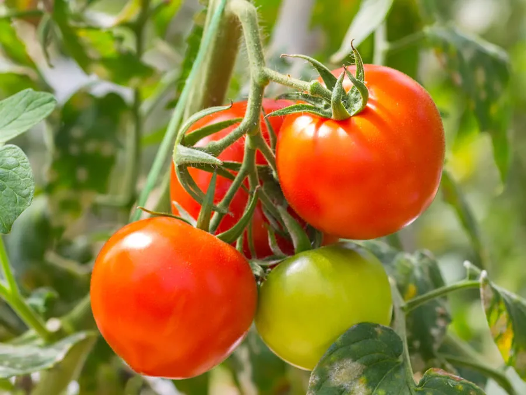
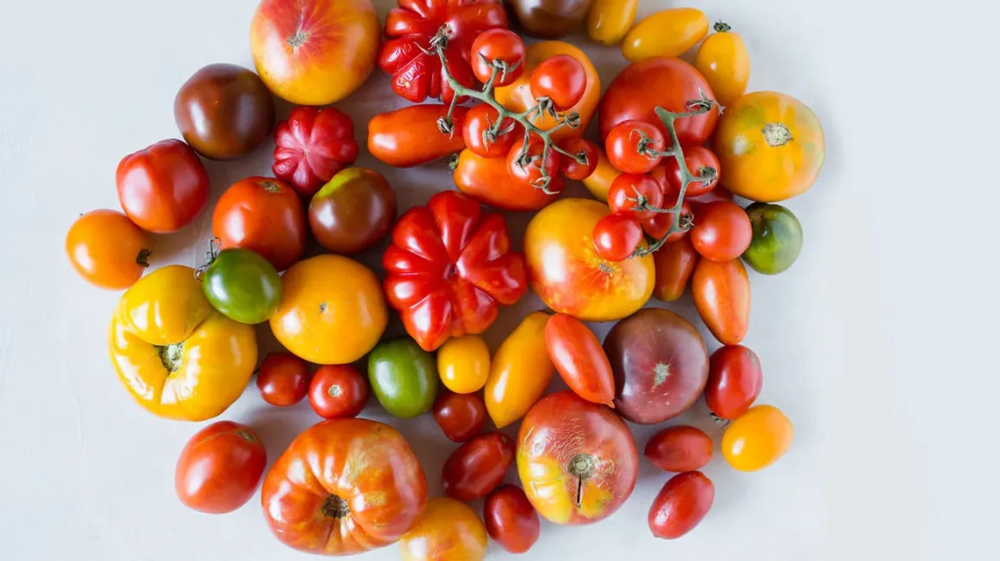
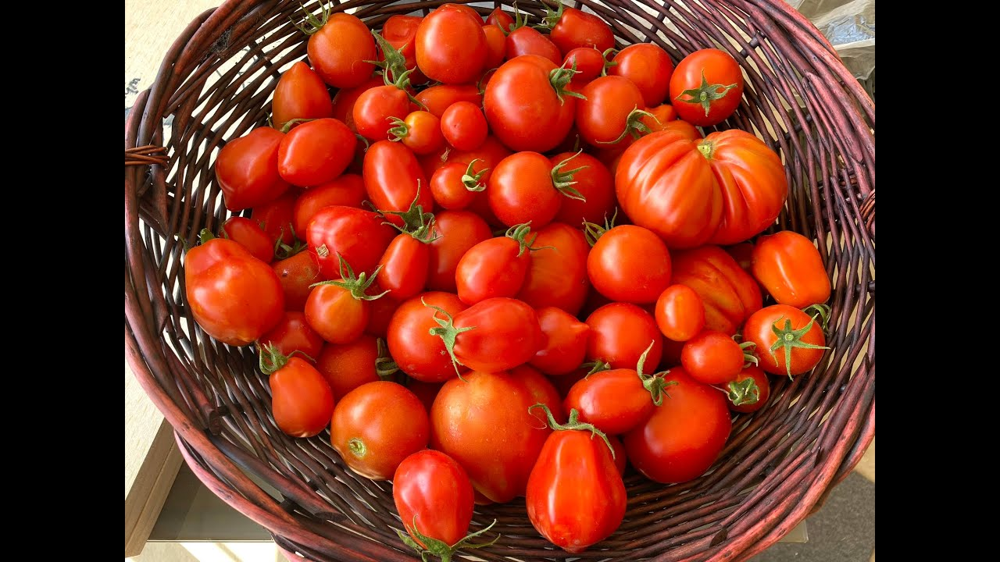

Tomato

Tomatoes are delicious and versatile fruits that can be easily grown in home gardens. Follow these steps to plant your own tomatoes and enjoy a bountiful harvest:
- Choose a sunny location for your tomato plants. They require at least 6-8 hours of direct sunlight each day.
- Prepare the soil by removing weeds and adding organic matter such as compost to improve its fertility and drainage.
- Plant tomato seedlings or transplants in the prepared soil. Dig a hole slightly deeper than the root ball and gently place the plant, ensuring the lowest set of leaves is just above the soil surface.
- Backfill the hole with soil, firming it gently around the plant. Water the plant thoroughly to settle the soil and remove any air pockets.
- Stake or cage the tomato plants to provide support as they grow. This helps keep the plants upright and prevents the fruit from touching the ground.
- Water the tomato plants regularly, aiming to keep the soil consistently moist but not waterlogged. Avoid overhead watering, as it can promote diseases.
- Fertilize the tomato plants with a balanced fertilizer according to the recommended schedule. This provides essential nutrients for healthy growth and fruit development.
- Prune the tomato plants by removing suckers (small shoots that grow in the leaf axils) to encourage better airflow and focus the plant's energy on fruit production.
- Monitor the plants for pests and diseases, and take appropriate measures to control them if necessary.
- Harvest the ripe tomatoes when they reach their desired size and color. Enjoy them fresh or use them in a variety of culinary preparations!
About Tomato

Tomatoes are widely grown and consumed around the world. They belong to the nightshade family and are botanically classified as fruits, although they are typically considered and used as vegetables in culinary contexts. Here are some key aspects of tomatoes:
- Flavor and Variety: Tomatoes come in a range of flavors, sizes, and colors. Varieties can be sweet, tangy, or acidic, and they include beefsteak, cherry, plum, and heirloom tomatoes, among others.
- Nutritional Value: Tomatoes are rich in vitamins A, C, and K, as well as minerals such as potassium. They also contain lycopene, an antioxidant associated with various health benefits.
- Culinary Versatility: Tomatoes are used in countless dishes worldwide, including salads, sauces, soups, sandwiches, and salsas. They add flavor, texture, and vibrant color to a wide range of recipes.
- Indeterminate vs. Determinate: Tomato plants are classified as either indeterminate or determinate. Indeterminate varieties continue to grow and produce fruit throughout the season, while determinate varieties have a more compact growth habit and produce a finite crop.
- Hybrid and Heirloom Varieties: There are hybrid and heirloom tomato varieties available. Hybrid tomatoes are bred for specific traits such as disease resistance or uniformity, while heirloom tomatoes are open-pollinated varieties that have been passed down through generations.
Benefits of Growing Tomatoes

Growing tomatoes in your garden can be a rewarding experience with several benefits:
- Fresh and Flavorful Produce: Homegrown tomatoes offer superior taste, texture, and flavor compared to store-bought varieties. They can be picked at peak ripeness, ensuring the best eating experience.
- Controlled Growing Environment: By growing your own tomatoes, you have control over the cultivation practices and can avoid using chemical pesticides or fertilizers if you prefer organic gardening methods.
- Cost Savings: Growing tomatoes can save you money in the long run, as the cost of purchasing tomato plants or seeds is often lower than buying tomatoes from the store throughout the growing season.
- Gardening Enjoyment: Gardening can be a fulfilling and enjoyable hobby. Tending to tomato plants, watching them grow, and harvesting the ripe fruits can provide a sense of accomplishment and satisfaction.
- Health Benefits: Tomatoes are a nutritious addition to your diet. They are low in calories and high in vitamins, minerals, and antioxidants, contributing to overall health and well-being.
- Teaching Opportunity: Growing tomatoes can be a valuable educational activity, especially for children. It teaches them about plant life cycles, food production, and the importance of sustainable agriculture.